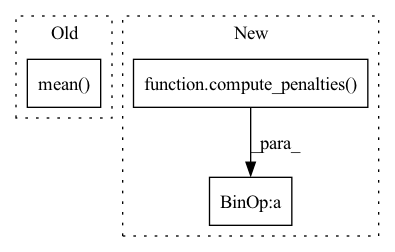

Pattern ID :1696

Before Change
for latent, q in zip(latents, quantizeds):
l2QLoss.append(F.mse_loss(latent.detach(), q, reduction="none").mean(axis=(1, 2, 3)))
l1QLoss.append(F.l1_loss(latent.detach(), q, reduction="none").mean(axis=(1, 2, 3)))
l2QLoss.append(0.1 * F.mse_loss(latent, q.detach(), reduction="none").mean(axis=(1, 2, 3)))
l1QLoss.append(0.1 * F.l1_loss(latent, q.detach(), reduction="none").mean(axis=(1, 2, 3)))
l1QLoss = sum(l1QLoss)
After Change
// posterior = OneHotCategorical(logits=summedProb)
// prior = OneHotCategorical(probs=torch.ones_like(summedProb) / summedProb.shape[-1])
// reg = torch.distributions.kl_divergence(posterior, prior) / diversity
reg = compute_penalties(batchWiseLogit, allowed_entropy=0.1, individual_entropy_coeff=cv, allowed_js=4.0, js_coeff=cv, cv_coeff=cv, eps=Consts.Eps)
reg = reg / diversity
regs.append(reg)
regs = sum(regs)
return ssimLoss, l1Loss + l2Loss, l1QLoss + l2QLoss, regs // + 10 * stdReg
In pattern: SUPERPATTERN
Frequency: 3
Non-data size: 3
Instances
Fragment ID: 5799960
Project Name: xiaosu-zhu/mcquic
Commit Name: ea5866d4c493e6ee8d7a2d5adc0524a6723e0c33
Time: 2021-03-22
Author: xiaosu.zhu@outlook.com
File Name: src/mcqc/losses/structural.py
M Class Name: CompressionLossTwoStage
N Class Name: CompressionLossTwoStage
M Method Name: forward(8)
N Method Name: forward(8)
M Parent Class: nn.Module
N Parent Class: nn.Module
M File Name: src/mcqc/losses/structural.py
N File Name: src/mcqc/losses/structural.py
M Start Line: 53
M End Line: 89
N Start Line: 69
N End Line: 91
'>
Before Change
unNormlogit = logit.reshape(len(logit), -1, logit.shape[-1])
// [n, k]
summedLogit = unNormlogit.mean(1)
posterior = OneHotCategorical(logits=summedLogit, validate_args=False)
prior = OneHotCategorical(probs=torch.ones_like(summedLogit) / summedLogit.shape[-1], validate_args=False)
reg = cv * torch.distributions.kl_divergence(posterior, prior)
After Change
posterior = OneHotCategorical(logits=batchWiseLogit)
prior = OneHotCategorical(probs=torch.ones_like(batchWiseLogit) / batchWiseLogit.shape[-1])
regs.append(torch.distributions.kl_divergence(posterior, prior).sum(-1) + compute_penalties(batchWiseLogit, allowed_entropy=0.1, individual_entropy_coeff=1.0, allowed_js=4.0, js_coeff=1.0, cv_coeff=1.0, eps=Consts.Eps))
regs = sum(regs)
return ssimLoss, l1Loss + l2Loss, regs // + 10 * stdReg
'>
Fragment ID: 5799964
Project Name: xiaosu-zhu/mcquic
Commit Name: e6be6a4448cb6220c3af99339513ada285f77c3b
Time: 2021-03-29
Author: xiaosu.zhu@outlook.com
File Name: src/mcqc/losses/structural.py
M Class Name: CompressionLoss
N Class Name: CompressionLoss
M Method Name: forward(6)
N Method Name: forward(7)
M Parent Class: nn.Module
N Parent Class: nn.Module
M File Name: src/mcqc/losses/structural.py
N File Name: src/mcqc/losses/structural.py
M Start Line: 42
M End Line: 60
N Start Line: 47
N End Line: 55
'>
Before Change
for latent, q in zip(latents, quantizeds):
l2QLoss.append(F.mse_loss(latent.detach(), q, reduction="none").mean(axis=(1, 2, 3)))
l1QLoss.append(F.l1_loss(latent.detach(), q, reduction="none").mean(axis=(1, 2, 3)))
l2QLoss.append(0.1 * F.mse_loss(latent, q.detach(), reduction="none").mean(axis=(1, 2, 3)))
l1QLoss.append(0.1 * F.l1_loss(latent, q.detach(), reduction="none").mean(axis=(1, 2, 3)))
l1QLoss = sum(l1QLoss)
After Change
// posterior = OneHotCategorical(logits=summedProb)
// prior = OneHotCategorical(probs=torch.ones_like(summedProb) / summedProb.shape[-1])
// reg = torch.distributions.kl_divergence(posterior, prior) / diversity
reg = compute_penalties(batchWiseLogit, allowed_entropy=0.1, individual_entropy_coeff=cv, allowed_js=4.0, js_coeff=cv, cv_coeff=cv, eps=Consts.Eps)
reg = reg / diversity
regs = sum(regs)
return ssimLoss, l1Loss + l2Loss, l1QLoss + l2QLoss, regs // + 10 * stdReg
'>
Fragment ID: 5799966
Project Name: xiaosu-zhu/mcquic
Commit Name: 5f7dab615bde20e91644209344dfee85436015a3
Time: 2021-03-22
Author: xiaosu.zhu@outlook.com
File Name: src/mcqc/losses/structural.py
M Class Name: CompressionLossTwoStage
N Class Name: CompressionLossTwoStage
M Method Name: forward(8)
N Method Name: forward(8)
M Parent Class: nn.Module
N Parent Class: nn.Module
M File Name: src/mcqc/losses/structural.py
N File Name: src/mcqc/losses/structural.py
M Start Line: 53
M End Line: 91
N Start Line: 69
N End Line: 91